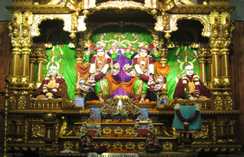
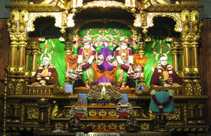
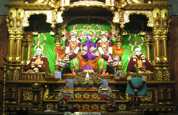

 

Iskcon, East of Kailash has developed Vedic Expo , Asias only technology center promoting Vedic Sciences and culturewherein a very high technology usage of Audio ,visual presentation of Bhagvat Gita is depicted with lights and sound used for creating historical effect and a very interesting tourist attraction as we are the only one in Delhi showcasing this. We have another show on Mahabharata and also a complete robotics show . The whole ambience of the temple is very attractive with ongoing devotional chants, fountains and gift shops. We have a Govinda’s restaurant serving high quality vegetarian food and has become land mark for foodies in Delhi. Iskcon in Delhi has eight temples across Delhi and our main temple at East of Kailash which is known as “Glory of India-Cultural Center” is spread in 3 acre area .Today we have around 10 lakh people who visit our Temple in a year. Iskcon is present in 77 countries with over 600 temples, 65 farm communities, 30 education centres and more than 100 restaurants